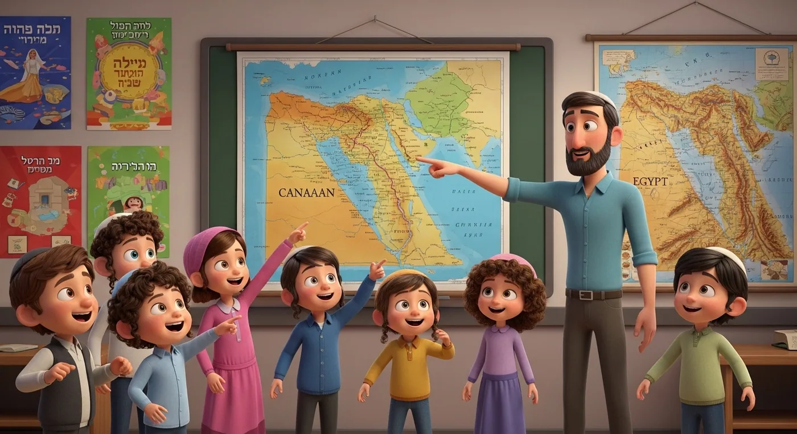
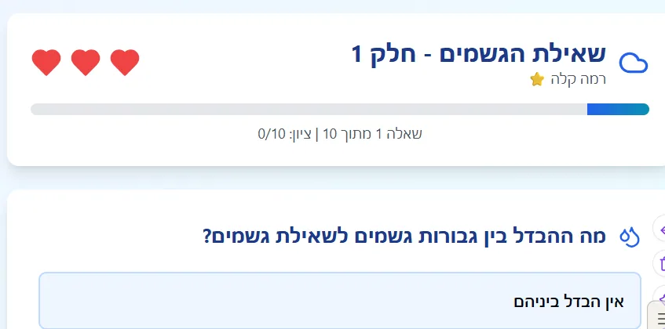
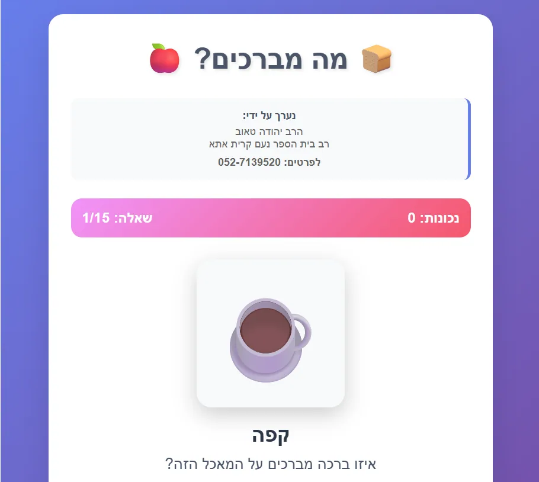

משחקי לימוד ופעילויות
משחקים אינטראקטיביים, חידונים ומצגות לילדים – לחגים, לאהבת ה' ולשמחה
37 פריטים
אוספי משחקים (3)
משחקי היכרות לתורה ולמשנה
למדו בכיף!
משחקי לימוד – אוסף
שיעורי אהבת השם משחקי לימוד על אהבת השם קוד מותאם אישית משחקים שונים - בנושאים שונים משחק על אהבת ה׳ - כבוד הא…

קישורים לאתרי משחקי למידה שלי
משחקי חזרה על כל פרשת שמות משחקי לימוד על פרשיות השבוע מהותו של יום ט"ו באב חומר על חברת יישוב ארץ ישראל …
אהבת ה' והכרת הטוב (10)
משחקי לימוד – אהבת השם
שיעורי אהבת השם - מסע רוחני מלא בשש עונות | 30 שיעורים מעמיקים להתקרבות אמיתית
אהבת השם בחיי היומיום - 8 משחקים אינטראקטיבייםמהרפתקאות ועד חידונים מתקדמים
משחקי לימוד על אהבת ה' - מסע משחקי מרתק לחיזוק הקשר עם הבורא דרך חוויות אינטראקטיביות, רפלקציה אישי
אהבת הקדושה - משחק למידה מתקדם
האם עבודה היא קללה?מסע למידה מרתק בשלושה משחקים
משחק על אהבת ה׳ - כבוד האישה מסע לימודי אינטראקטיבי 🌟
קישור למשחק מצוין! 🚀 בואו נבנה משחק אינטראקטיבי מקצועי! אני בונה עכשיו משחק React מלא עם: ✅ 8 שיעורים (לפי 8 ה…
🌟 6 שערי האהבה 🌟
קישור למשחק 🔍 משחק חקר ופתרון בעיות: "תעלומת האהבה האבודה" אני מתלהב מהבחירה הזו! זה בדיוק החומר הנכון למשחק …
דילמות בהכרת הטוב - האם צריך להודות על חצי טוב?
קישור למשחק אבנה לך משחק דילמות מוסריות מרתק המבוסס על השיעור העמוק הזה! 🎯 אני מתחיל בקריאת המיומנויות הרלוונ…
אהבת חסדו וטובו ית' והתבוננות חיצונית
קישור למשחק
שמחה וחיוך (4)
חידונים ולמידה - השמחה והחיוך
מדריך מסע השמחה - שמחה במצווה - יסוד העבודה
מסע אל אוצר השמחה - ארבעת המפתחות לאושר האמיתי
תכנית לימודים שנתית: "עבדו את ה' בשמחה"
חגים ומועדים (8)
הלכות ארבעת המינים ועולם החיוך✨3 פעילויות לחג הסוכותהלכות, משחקים ושמחה!
משחקי חג הסוכות -
מצגות סוכות וארבעת המינים
ימים של חיבה למצוות - יום טוב שבין יום כיפור לסוכות
פעילויות חודש אלול - בית הספר נעם
מצגות ראש השנה - מלכות ודין
מצגות חג הסוכותאוסף מלא ומקיף לכל המשפחה
שמחת תורה - השמחה שלא נגמרת
קישור למשחק עם חומר לימודי קישור למשחק נוסף יש לקרוא לפני כן את השיעור על שמחת תורה שמחת תורה - השמחה שלא נג…
תורה, משנה ופרקי אבות (7)

חומש שמות
מצגת חזרה על חומש בראשית מצגת PDF חזרה על חומש בראשית PDF • 3658KB מצגת פאוייר פוינט חזרה על חומש בראשית PPT…

מצגת על פרקי אבות פרק ב
פרקי אבות פרק ב מצגת על הולדת רבי מהותו של יום ט"ו באב חומר על חברת יישוב ארץ ישראל "מהפכה עולמית? הנבואה …

שאלת גשמים בז' בחשון
משחק למידה לחצו כאן דף למידה ניתן להוריד מכאן דיני שאלת גשמים PDF • 467KB מצגת על דיני שאלת גשמים לחצו כאן …
מצגות על פרקי אבות פרק א
מצגת על פרקי אבות פרק א מצגת ראשונה מצגת שניה מגצת על משניות אבות פרק ב - מצגת שניה - יש בה את המשניות שחסר ב…
חידון על פרק ראשון של מסכת אבות
משחק על משנה אבות פרק ב משנה א
מבחן ברמה ראשונה מבחן ברמה שניה
מבחן אמריקאי – פרשת שמות
בג
הלכה לילדים (5)

חידון ברכות לילדים - מרתק
לחץ כאן מהותו של יום ט"ו באב חומר על חברת יישוב ארץ ישראל "מהפכה עולמית? הנבואה שמתגשמת מול עינינו!" הער…
משחק - סדר את הדברים לפי זמנם
קישור למשחק
מה מברכים כשרואים את החטופים
הלכות תחבורה ציבורית
הלכות ציצית לילדים
מבחן על הלכות ציצית לילדים חלק א 🎉 המשחק מוכן! צפה במשחק ✅ מה בניתי לך: 🎮 משחק "מסע בעולם הציצית - חלק 1" 3 ש…